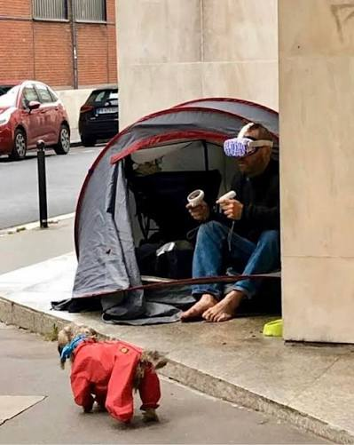

Bir makinenin, insanlığın gelecekte hâlâ yeri olup olmadığını sorgulayan bir sanat eseri ortaya çıkarmasını izlemenin insanı derinden tedirgin eden—ve tuhaf biçimde güzel—bir yanı var.
Geçenlerde yapay zekâyla üretilmiş Who Gets Tomorrow adlı bir müzik videosuna rastladım. Başrolde Astra Blue adında, mavi saçlı, kurgusal bir şarkıcı var. Beş dakikayı biraz aşan sürede yapay zekâ, yok olan işler, ekonomik eşitsizlik ve insanlığın belirsiz geleceği üzerine dokunaklı bir tefekkür sunuyor.
İroni neredeyse fazla kusursuz. Var olmayan bir şarkıcı, makinelerin insanların yerini aldığı bir dünyaya ağıt yakıyor. Yapay zekânın ürettiği bir eser, yapay zekânın kendi sonuçlarının yasını tutuyor. Üstelik her şeyin sentetik olduğunu bilmemize rağmen ortaya çıkan şey, nedense şaşırtıcı derecede insani.
Ama beni asıl çarpan, teknolojinin ne kadar ilerlediği değildi. İzlerken yavaş yavaş şekillenen bir düşünceydi: Sanal geleceğimizden bir kesit buysa, belki Matrix'e girmeye direnmeyeceğiz. Belki içeri girebilmek için sıraya dizileceğiz.
Korkmayı Öğrendiğimiz Hapishane
The Matrix 1999'da vizyona girdiğinde bilimkurgunun en rahatsız edici olasılıklarından birini önümüze koydu: Bilgisayarın ürettiği bir gerçekliğe hapsolmuş, makineler fiziksel dünyayı yönetirken farkında olmadan yapay hayatlar yaşayan bir insanlık. Matrix'ten kaçmak bir özgürleşme eylemiydi.
Aradan çeyrek asrı aşkın bir süre geçti ve şimdi ilginç bir tersine dönüş beliriyor. Ya Matrix bir hapishane olarak değil de bir davet olarak gelirse?
Yapay zekâ bugün bile gelişkin görseller, müzik, filmler ve etkileşimli deneyimler üretebiliyor. Sanal gerçeklik gelişmeyi sürdürüyor. Yapay zekâ destekli karakterler bir gün sürükleyici dijital dünyalarda yaşayabilir, bizimle yaşadıklarını hatırlayıp kişiliğimize uyum sağlayabilir. Antik Roma'da yürüdüğünüzü, uzak galaksileri keşfettiğinizi ya da hiç var olmamış uygarlıklara adım attığınızı hayal edin. Asla parasını ödeyemeyeceğiniz göz alıcı bir evde oturduğunuzu, bilet almadan dilediğiniz yere gittiğinizi ya da fizik yasalarına meydan okuyan maceralar yaşadığınızı düşünün. Koca koca dünyalar hayal gücümüze yanıt verebilir ve bize coğrafyanın, ekonominin, hatta biyolojinin sınırlamadığı deneyimler sunabilir.
Sonunda kışkırtıcı bir soru belirir: Yapay bir deneyim gerçek mutluluk, hayranlık, bağ ya da doyum yaratıyorsa, yapay kökeni onu zorunlu olarak daha az anlamlı mı kılar?
Kurgusal bir film bizi ağlatabilir. Bir roman hayatımızı değiştirebilir. İnsan deneyimini her zaman hayal gücü ve algı biçimlendirdi. Sanal gerçeklik bu ilişkiyi yalnızca mantıksal ucuna kadar götürüyor olabilir.
Elbette duyguların gerçek olması, onları doğuran yapay kaynakları gerçek ilişkilere ya da başarılara zorunlu olarak denk kılmaz. Ama sahicilik ile deneyim arasındaki çizgiyi seçmek giderek zorlaşabilir.
Deneyim Makinesine Yeniden Bakmak
Filozof Robert Nozick 1974'te Deneyim Makinesi adıyla bilinen ünlü bir düşünce deneyi ortaya attı. Arzuladığınız her deneyimi sağlayabilen bir makineye bağlandığınızı hayal edin. Olağanüstü işler başardığınıza, anlamlı ilişkiler kurduğunuza ve harika bir hayat sürdüğünüze inanırdınız—oysa bunların hiçbiri dış dünyada yaşanmıyor olurdu.
Makineye bağlanır mıydınız?
Nozick'e göre pek çok insan bunu reddederdi, çünkü hoş duyumlardan fazlasını isteriz. Bir şeyleri gerçekten başarmak, algılarımızdan bağımsız bir gerçekliğin parçası olmak isteriz.
Peki soruyu tersine çevirirsek ne olur?
Filozof Felipe De Brigard, Philosophical Psychology'de yayımlanan araştırmasında, insanlara zaten böyle bir makinenin içinde oldukları söylendiğinde sezgilerinin nasıl değiştiğini inceledi. Bu durumda makineden çıkma isteği o kadar da net değil. Gerçekliği tercih etmemiz yalnızca sahiciliğe bağlılığımızı değil, alışık olduğumuz şeylere ve zaten bildiğimiz hayatlara duyduğumuz bağlılığı da yansıtıyor olabilir.
Bunun önemi şurada: Gelecek büyük ihtimalle karşımıza kırmızı hap mı mavi hap mı diye soran dramatik bir anla çıkmayacak. Geçiş bunun yerine adım adım gerçekleşebilir.
Kişiye özel bir eğlence akışı. Bir yapay zekâ arkadaşı. Sürükleyici bir sanal gerçeklik başlığı. Sanal bir işyeri. Ve birer birer, dijital olarak inşa edilmiş dünyalar.
Her adım pratik, keyifli ve son derece makul görünecek. Derken bir gün, hayatımıza keyif, kimlik, arkadaşlık ve amaç katan şeylerin büyük kısmının çoktan makinelerin tasarladığı ortamlarda bulunduğunu fark edebiliriz. O noktada soru artık içeri girmek isteyip istemediğimiz olmayabilir. Dışarı çıkmak için ikna edici bir nedenimiz kalıp kalmadığı olabilir.
Bizi Matrix'e Hile Değil, Fiyat Sokabilir
The Matrix'in en akılda kalan karakterlerinden biri Cypher'dır. Öteki tutsakların aksine Cypher, simüle edilmiş dünyanın yapay olduğunu bilir. Yine de oraya dönmek ister; fiziksel gerçekliğin zorluklarına karşı o dünyanın konforlu yanılsamalarını tercih eder. Matrix'i gerçek olduğuna inandığı için seçmez. Gerçeklik artık çekilmez olduğu için seçer.
Bu ayrımın şaşırtıcı bir kehanet olduğu ortaya çıkabilir.
Teknolojik distopyaları, istemeyen halklara zorla dayatılan sistemler olarak hayal ederiz. Oysa kontrol her zaman baskı gerektirmez. Bazen cazip bir alternatif sunmak yeter. Sanal ortamlar arkadaşlık, güzellik, macera, takdir ve başarı sağlarken fiziksel toplum ekonomik güvencesizlik, yalnızlık ve kısıtlı fırsatlar sunuyorsa, milyonlar neden o ortamlara kucak açmasın?
Onların gözünden bu bir teslimiyet gibi gelmeyebilir. Özgürlük gibi gelebilir.
Bazı açılardan gerçekten de öyle olabilir. Sürükleyici ortamlar, hayatın her kesiminden insana eşi görülmemiş fırsatlar sunabilir.

İronilerin En Büyüğü
Bilimkurgu onlarca yıl boyunca bize makinelerin kurduğu bir gerçeklikten korkmayı öğretti. İnsanlığın ondan kaçmak için umutsuzca çırpındığını hayal ettik. Oysa yapay zekâ ürünü bir şarkıcının geleceğimiz üzerine dokunaklı bir tefekkür sunmasını izlerken, bu hikâyenin nasıl gelişebileceğini yanlış mı anladık diye düşünmeden edemiyorum.
Belki Matrix fetihle, aldatmacayla ya da esaretle gelmeyecek. Belki olağanüstü bir güzellikle gelecek: uygun fiyatlı eğlenceyle, dijital arkadaşlıkla, kişiye özel dünyalarla ve fiziksel sınırlara takılmayan deneyimlerle. Belki içeri kendi isteğimizle adım atacağız—insanlığımızı yitirdiğimiz için değil, o dünyalar en insani arzularımıza seslendiği için: hayranlığa, aidiyete, maceraya, özgürlüğe ve anlama.
Bu ikilemi sentetik bir sanatçının dile getirmesinde şiirsel bir yan var. Makinenin ürettiği bir sanatçı, insanların ekonomik olarak saf dışı kalabileceği bir geleceği şarkıya döküyor. Eserin kendisi, sorguladığı teknolojik dönüşümün canlı kanıtı. Duygusal değeri de içindeki çelişkilerden geliyor.
Asıl mesele, insanlığın olağanüstü sanal dünyalara girmesini engellemek değil. Bu adımın, fırsatların giderek kıtlaştığı fiziksel bir dünyadan kaçış değil, gerçek bir tercih olarak kalmasını sağlamak.
İlk Matrix filminde insanlık, makinelerin tasarladığı bir gerçeklikten kaçmak için mücadele ediyordu. İnşa ettiğimiz gelecekte ise insanlık böyle bir dünyanın kapısında durabilir; sunduğu her şeyin büyüsüne kapılıp içeri alınmak için can atabilir.
Soru artık Matrix'ten kaçıp kaçamayacağımız olmayabilir. Kaçmayı hiç isteyip istemeyeceğimiz olabilir.
İlham kaynağı: Who Gets Tomorrow — Astra Blue AI. Teknolojinin insanları işinden etmesini, ekonomik eşitsizliği ve insan özgürlüğünün geleceğini konu alan, yapay zekâyla üretilmiş bir müzik videosu.
Yorumlar